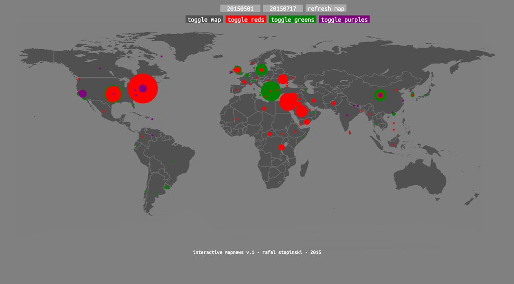

I'm a goal oriented person; this helps me break down the frequent logical and analytical problems that occur when programming. This is really just a complicated way to say I'm good at problem solving.
I am currently enrolled in the Honors Program at Rutgers University where I study computer science and finance.
For the past few years, I have applied my skills in web development as a freelance developer as well as an intern developer at Commvault.
I often take on side projects, as I enjoy the challenge of solving puzzles and making my ideas come to life. I'm currently working on a 3D exploration/thriller game; you can check out the dev log by clicking that middle button below.
If you're interested in hiring me, or just want to talk, get in touch below by opening the envelope. If you want to see a list of some of my projects, open the folder below. You can find my résumé by clicking here.
✕
1Deej

This is a project worked on during the Fall HackRU 2015. It allows listeners to text music suggestions (title, artist, album) to a DJ, who can then automatically add the suggestions onto their current playlist. Songs selections are currently limited to the Spotify library. This ended up winning 3rd place overall and best use of Twilio's API. Richard Murby covered it a bit in this Devpost Commit commit video. We're currently planning on polishing the app and releasing it.
NewsMap

This interactive map categorizes news articles (currently from NYT) into conflict, economic, and environment related news. It then plots them on the map, based on the amount, and where, the articles were written.
more being added soon,
I promise